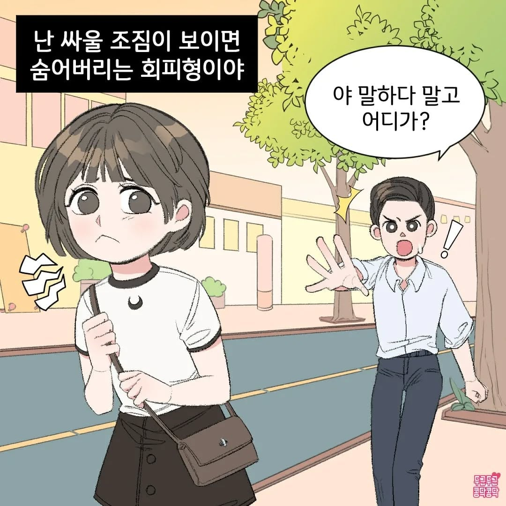
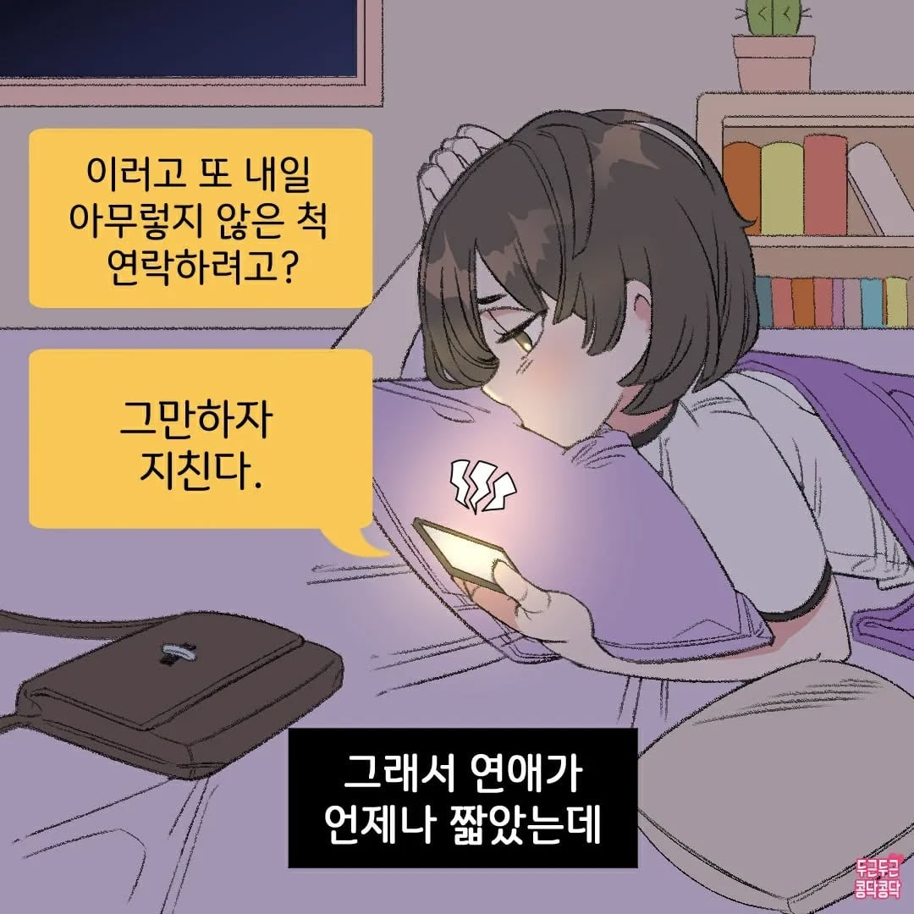
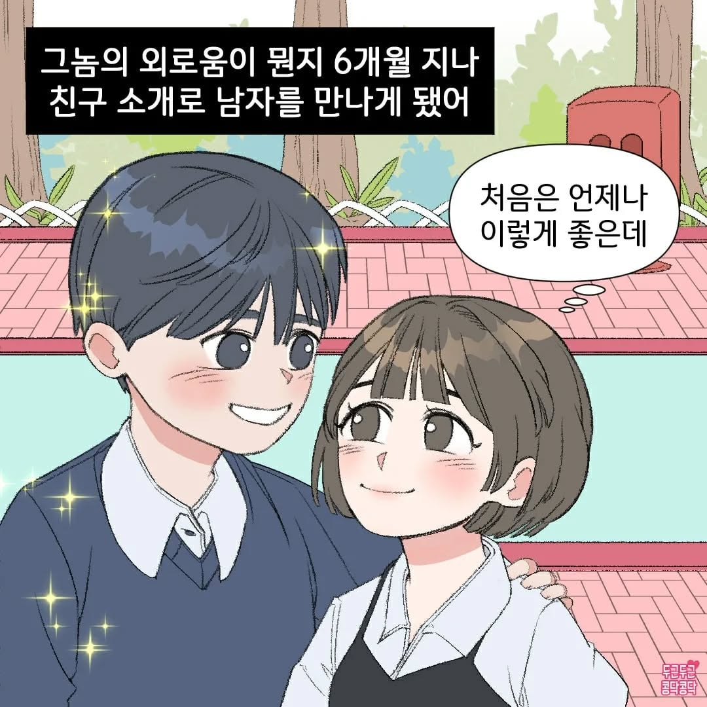
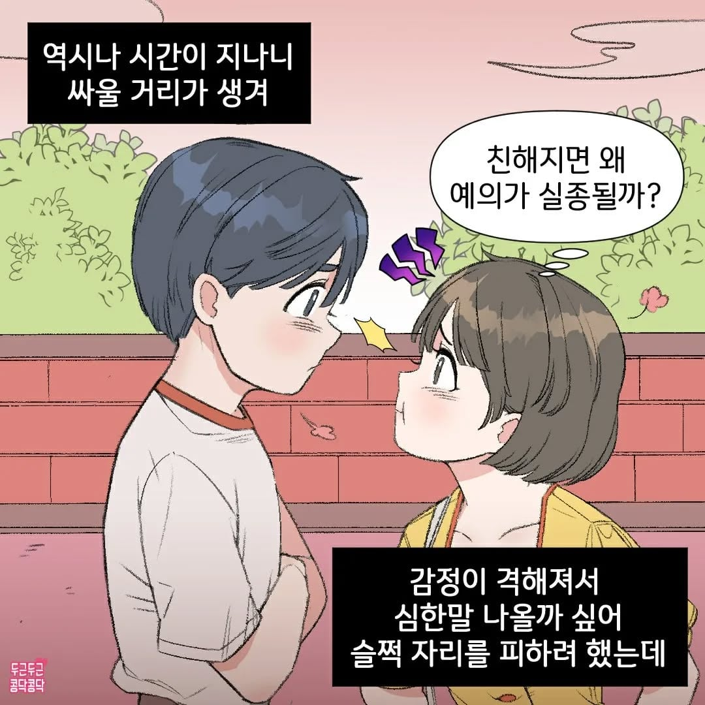
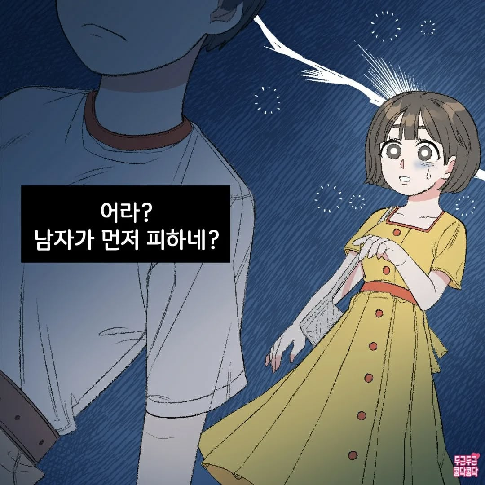
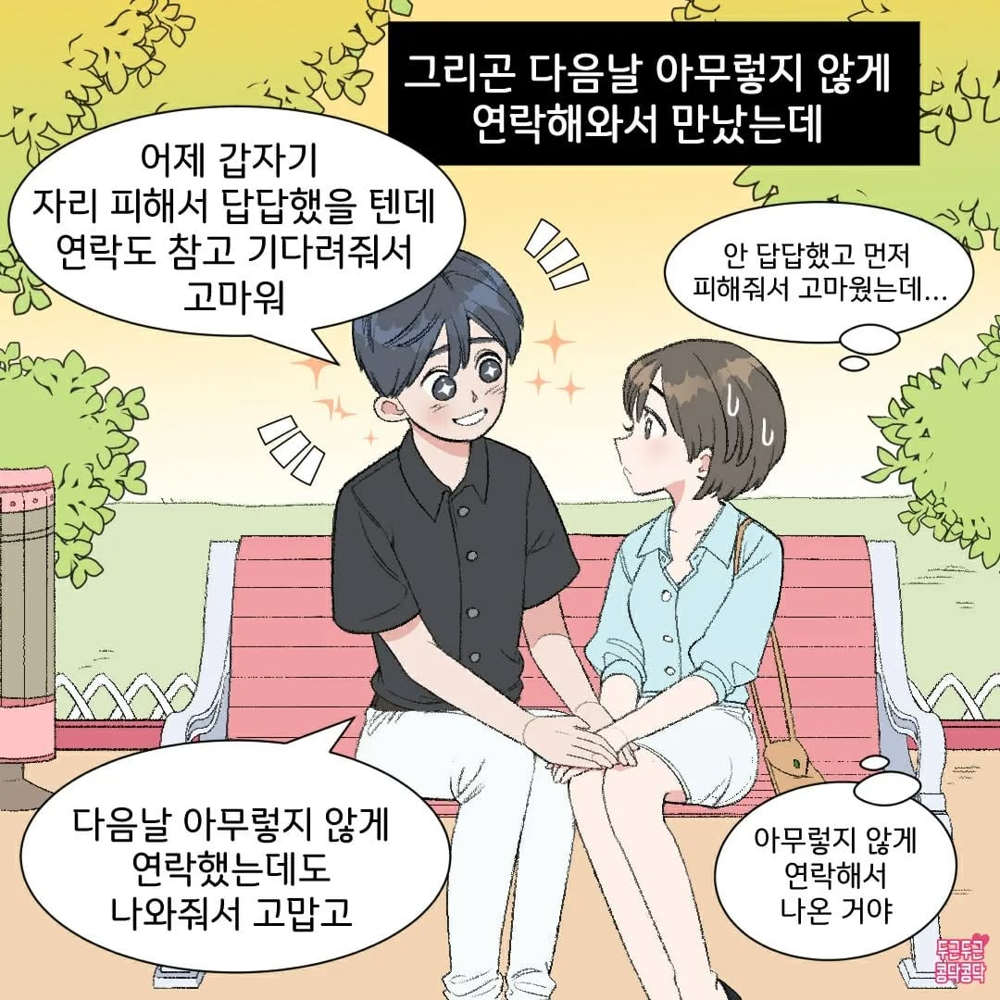
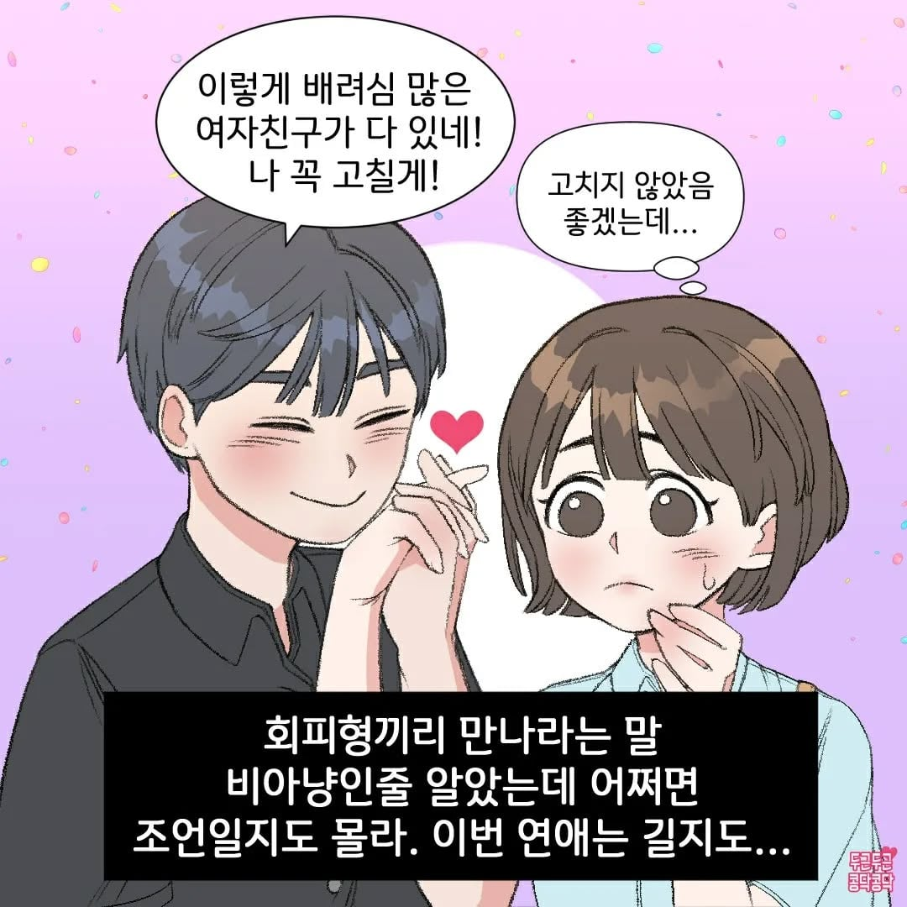
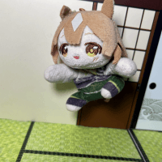

일단 걔는 회피형 인간이 뭘 말하는 건지 머리에 다시 집어넣으라 해라
회피형 인간 특징) 기동성이 좋고 이동력이 높음
뉴타입임?
회피형은 중요할 떄 꼭 쳐맞고 터지더라 든든한 국밥형이 좋음
매일매일이 민첩한 하루임
적일때는 다 피하는데 내가 회피형일때는 다 쳐맞음
아 탱피 너무 훅훅 빠져서 못해먹겠네 ㅡㅡ
나도 회피형읋 진화한경우인데
싸워봤자 사람바뀌는 경우는 없드라 걍 회피하면 끝이고
회피안하면 싸우고 끝임
차이는 싸웠냐마냐만 남더라 그냥 사람을 바꿔쓸생각을 하지말고 단점도 그 사람자체인걸 인정해야됨
싸우면 해결된다는 착각을 버려야된다고 생각함
진화? 는 너무 과잉이신 거 같고
그럼 안 싸울 사람만 평생 만난다는 건가요?
보통 사람은 싸워도 화해하고 개선해나감
그 개선이라는게 정말 끝이없음 이거 다음은 뭐 이거다음은 뭐
근데 그게 계속 족쇄를 만드는거라
담배끊듯이 평생 참으면서 사는거 같드라고
그래서 나는 주변에서 결혼은 어떤사람이랑 해야되는가 라는 말이나오면
영말 뒤집어 까놓는 모습을 보고 이버릇을 고쳐서 결혼해야지
이렇게 생각할게 아니라 내가 평생 뒤집어 까놓은 양말을 내가 다시 뒤집어놔야겠다 라고 생각이 들면 결혼하라고 함
ㅇㅇ 끝 없음 그 족쇄가 살만 한 수준까지 싸우면서 선 찾고 양보하고 사는 거라고 생각
그 이상 요구치는 그냥 헤어지면 되는 거고
두글자로 보통 병신이라고 하죠
서로 감정 상하는 일이 있으면 그 자리에서 푸는게 중요하지.
일단 사람이니까 욕이나 폭력 없이 풀기 어렵겠다 싶어서 자리를 피할수 있어 그게 현명한 거니까
근데 그걸 묵혀두지 말고 둘이서 대화를 해야지.
대화를 정상인다운 방식으로 문제를 해결하기 위해 존중과 선의지를 가지고 해야지
지 ㅈ대로 감정배설하는걸 대화라고 주장하니 문제가 생기는듯?
어우 그럼 회피형 아닌사람들도 일단 피해야지 어쩔수가 없네 ㅋㅋㅋㅋㅋㅋㅋ
회피형적 성격으로 가득찬 놈들이 착각하는게 자긴 싸움을 피하는거라고 생각하는데 전혀 아님, 대화 자체를 하려고 하지않으니까 상황이 나아지지 않고 문제에 대해 직면하러하질 않음, 그래놓고 난 싸우기 싫어~감정 상하기 싫어~ 아주 비겁하기 짝이 없는 놈들이야
도망자의 기질
겁많고 속좁고 유약함
저런 안좋은 성격유형 둘이 만나면 둘중에서 좀 덜한사람이 결국 빡침 ㅋㅋㅋㅋ
안치우는애 둘이 만나면 둘중에서 좀더 깔끔한애가 결국 청소하다가 빡치게 되어있는거랑 똑같음
회피형 둘도 결국 자기가 회피해도 중요한문제 누가 해결해주니까 회피하면서 살아온거지
둘중의 한명은 똥을 치워야하는데 나머지가 회피하면 극대노하더라
난 바로바로 풀어야해서 회피형이랑은 꼭 싸우게되더라
감정정리 상황정리 해서 말하려면 회피형이라함. 개싸움하는 애들보면 역으로 왜 무식하게 감정이랑 시간낭비하고 있지 라는 생각드는데
어릴때엔 후자였는데 이젠 전자가됐음
회피형끼리 만나면 초기에는 좋은데 뭔가 계속 두리뭉실하게 확실히 해결되지 않고 남아있다가 크게 터짐
그 응어리도 회피해버리기~
다음날 미안하고 고맙다고 연락하고 화해하는게 회피형이 아닐텐데
대화를 미숙하게 논리없이 자기 감정에만 몰두하며 지 말만 맞다고 거지같이 하니 그런게 아닐까?
본인이 안정형이라고 주장하는 놈들 중 태반이 그런 수준이던디?
진짜 안정형들은 조용한데 답정너에 감쓰통 메이커 나르시시스트들이 제일 안정형 타령하는듯ㅋㅋㅋ
주객전도도 정도껏 해야지 이젠 아예 ㅈㄹ병걸리면 안정형이라고 하겄어?
나도 회피형인데 그냥 에너지가없어
미친것들
흥분하거나 화난 상태에서 맞받아치거나 해결하려하면 오히려 상황이 더 나빠지던데.. 그래서 일단 피하고 어느정도 가라앉으면 말함. 바로 바로 풀려고하면 결국 누구 하나가 일방적으로 희생해야해하거나 유야무야 해결하게되서 풀고나서도 응어리가 남더라

회피형끼리 연애의 끝은 잠수 이별이지
여자친구가 실수할때 괜찮다고 그냥 넘어갔는데
내가 실수하고 넘어가니까 사과안했다고 회피형이라더라